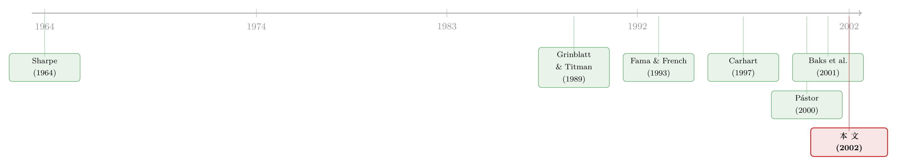

买主动基金，可能恰恰是因为你不相信经理有本事
本文读的是 Pástor & Stambaugh (2002, Journal of Financial Economics)：他们用贝叶斯框架把「历史业绩」和「先验信念」捏在一起，替投资者从五百多只无申购费基金里挑出夏普比率最高的组合。最反直觉的一个结论是——即便你坚信基金经理毫无选股本事，主动型基金也可能进入你的最优组合；而那些「手气最热」的去年冠军基金，却在任何信念下都被挡在门外。
1 一个挑基金的人，到底在跟什么较劲
设想你手上有一笔钱，要在几百只股票型基金里挑一个组合出来。最朴素的做法，是把每只基金的历史收益拉出来，谁夏普比率高就买谁。可你心里清楚，这样做的风险是显而易见的：你会过度投资于那些只是运气好的基金——尤其当一只基金的业绩记录只有短短两三年时，那点漂亮的超额收益里，到底有几分是本事、几分是噪声，谁也说不准。
那走另一个极端呢？干脆什么基金都不挑，拿一笔无风险资产配上一只市场指数基金，全盘接受 CAPM 给出的投资含义。这当然「干净」，但它也太干净了——它完全无视了数据里关于定价模型缺陷的信息（CAPM 也好、别的模型也罢，没有哪个是完美的），也彻底放弃了「某些经理或许真有选股能力」这条线索。
于是，一个挑基金的人其实被夹在两股力量中间：一边是历史数据，它嘈杂但携带真实信息；另一边是先验判断，它是你对「定价模型有多准」「经理有没有可能跑赢」这两件事的主观信念。Pástor 和 Stambaugh 这篇文章想回答的，正是一个看似简单、却长期没人正面处理的问题：
怎样把数据里关于定价模型误差和经理技能的信息，与投资者先验地认为这两件事有多重要的判断，正式地、可计算地揉进同一个投资决策里？
注意这里有个微妙的措辞。学界研究基金「业绩评价」已经几十年了，但几乎没有人真正去解一个最优基金组合的问题。绝大多数文献是在用历史数据估计业绩指标、给基金排名；而这篇文章换了个动词——它用数据来做投资决策。这个视角的转换，是全文的起点。
2 真正关键的一步：把「技能」从「模型不准」里拆出来
要把这个问题做对，作者迈出的最关键一步，是区分两件长期被混为一谈的事：经理的选股技能，和定价模型本身的不准。
我们平时怎么衡量一只基金好不好？看它的 阿尔法 (alpha)——把基金的超额收益对基准 (benchmark) 资产做回归，那个截距项。截距为正，常被解读成「经理有本事，挑到了被错误定价的证券」。
可这个解读藏着一个陷阱。如果基准本身不能给所有被动资产定价，那么一个毫无技能的经理，也能轻轻松松做出正的 alpha：他只要开一只新基金，专门去买那些历史上 alpha 为正的被动资产就行了。换句话说，正的 alpha 既可能是「技能」，也可能只是「基准漏掉了某些定价信息」的副产品。这两者，光看 alpha 是分不开的。
作者的解法是引入一组非基准被动资产 (nonbenchmark passive assets)。设想我们有 \(m\) 个非基准资产和 \(k\) 个基准资产。第一个回归，是把非基准资产的收益对基准资产做回归：
$$ r_{N,t} = a_N + B_N\, r_{B,t} + e_{N,t} $$
这里的截距 \(a_N\)，衡量的就是基准给非基准资产定价定得准不准——如果基准是完美的定价工具，\(a_N\) 应该等于零。作者把 \(a_N\) 这一组截距的先验标准差称作错误定价不确定性 (mispricing uncertainty)，记作 \(\sigma_{aN}\)。
第二个回归，才是衡量技能的：把某只基金的收益对全部 \(p\,(=m+k)\) 个被动资产做回归：
关键就在这个截距 \(d_A\)。它不是对「基准」定义的，而是对更完整的那套被动资产定义的。直觉是这样的：传统 alpha（记作 \(a_A\)，来自只对基准做回归的 \(r_{A,t}=a_A+b_A r_{B,t}+e_{A,t}\)）之所以靠不住，是因为它可能只是基准没覆盖到的被动收益；而 \(d_A\) 把那部分收益用非基准资产显式地控制掉了，剩下的截距才更接近「经理凭真本事赚来的钱」。
作者引用 Grinblatt 和 Titman (1989) 的话点破了这层道理：「被评价者可交易的资产所构成的无条件均值-方差有效组合，能给出关于其业绩的正确推断……业绩度量与特定均衡模型之间的联系并非必要。」一句话——衡量技能，靠的是足够完整的资产集，而不是某个定价模型的对错。
这一拆分的妙处在于：\(d_A\) 不够格做技能度量，就意味着 \(a_A\) 更不够格；反过来，\(a_A\) 失效时 \(d_A\) 仍可能是有效的。所以纳入非基准资产，是一种「只赚不赔」的稳健化。
3 框架：把信念写成两个先验
拆开了「技能」和「模型不准」，接下来就要给这两件事各自安一个先验。整个贝叶斯机器的精髓，都在这两个正态先验上。
先验一：关于错误定价。 条件于协方差矩阵 \(S\)，\(a_N\) 的先验是
$$ a_N \mid S \sim N\!\left(0,\; \sigma_{aN}^2\,\frac{1}{s^2}\,S\right),\qquad E(S)=s^2 I_m $$
它以「基准能精确定价」（即 \(a_N=0\)）为中心。\(\sigma_{aN}=0\) 等价于完全相信基准的定价能力；\(\sigma_{aN}=\infty\) 则是对 \(a_N\) 毫无信念的弥散先验；取一个有限的非零值，意味着你认为模型大体可信、但允许一定程度的偏差。
先验二：关于技能。 条件于残差方差 \(\sigma_u^2\)，技能度量 \(d_A\) 的先验是
$$ d_A \mid \sigma_u^2 \sim N\!\left(d_0,\; \frac{\sigma_u^2}{E(\sigma_u^2)}\,\sigma_d^2\right) $$
这里有个细节很值得玩味：先验方差正比于 \(\sigma_u^2\)。直觉是——如果一只基金的收益能被基准很好地解释（\(\sigma_u^2\) 很小），那它的经理就不太可能搞出一个很大的 \(d_A\)。技能的「空间」，是被基金收益里那部分无法被被动资产解释的波动撑开的。
那先验均值 \(d_0\) 取什么？这又是一处见功力的地方。因为定义 \(d_A\) 用的那些被动资产是不扣成本的，而真实基金要扣费用和交易成本，所以哪怕经理零技能，\(d_0\) 也该反映成本。当先验完全排除技能（\(\sigma_d=0\)）时：
$$ d_0 = -\frac{1}{12}\left(\text{expense} + 0.01\times \text{turnover}\right) $$
那个 \(0.01\)，相当于假设每笔交易的来回成本是 1%——正好接近 Carhart (1997) 估计的 95 个基点。而当允许技能存在（\(\sigma_d>0\)）时，换手率与业绩的关系变得暧昧（高换手若伴随技能则是好事，若没技能则只是白白磨损），作者用实证贝叶斯方法发现换手率的系数在统计上站不住脚，于是简化为
$$ d_0 = -\frac{1}{12}\,\text{expense} $$
有了这两个先验，再加上数据，就能算出基金收益的预测分布 (predictive distribution)：
$$ p(r_{T+1}\mid R) = \int_\theta p(r_{T+1}\mid R,\theta)\, p(\theta\mid R)\, d\theta $$
它对参数的后验做了积分，因此自动把参数不确定性纳入了考量——这正是短业绩记录基金「不该被全信」这件事在数学上的落点。最后，组合的最优性用均值-方差确定性等价 (certainty equivalent) 来度量：
$$ C_p = E_p - \tfrac{1}{2}A\,\sigma_p^2 $$
风险厌恶 \(A\) 被设为 2.75（这个数的校准是：当投资域里只有市场指数加无风险资产时，这样的投资者刚好全仓市场）。
4 数据：五百多只基金，八个被动资产
数据来自 1998 年的 CRSP Survivor Bias Free Mutual Fund Database。初始样本有 2,609 只美国国内股票型基金，用于实证贝叶斯估计先验参数。构造投资域时，筛掉有申购费的、1998 年底已不存在的、现任经理任期内回报记录不足 36 个月的、以及缺费用率/换手率数据的，最后剩下 503 只无申购费基金。观测单位是基金的月度超额收益（相对一个月期国库券）。
被动资产一共八个，覆盖 1963 年 7 月至 1998 年 12 月。基准最多用四个：Fama-French (1993) 的三个因子 MKT、SMB、HML，加上 Carhart (1997) 的动量因子 MOM。非基准资产则包括一个特征匹配价差 CMS 和三个行业组合 IP1、IP2、IP3——当你把信念中心放在 CAPM 上时，SMB、HML、MOM 就自动变成非基准资产；放在 Fama-French 三因子上时，MOM 成为非基准资产。
要注意一点：八个被动资产里既有基准也有非基准，它们都参与建模和估计，但只有那 503 只基金才被允许真正投资，而且不许做空。这正呼应了开篇的张力——基准的「零成本收益」是假想的、买不到的，模型只拿它当信息源，不当投资标的。
5 反转：买主动基金，是因为没人能替代基准
铺垫到这里，文章最漂亮的结果终于登场，而它彻底打翻了一个常识。
我们通常觉得：要是你压根不相信经理有选股能力，那你就该去买被动指数基金，主动基金不过是「贵且无用」。但 Pástor-Stambaugh 发现，一旦承认那些假想基准是买不到的，事情就变了——在整个基金宇宙里，未必存在它们的近似替代品。
具体有多严重？对一个完全相信 Fama-French 模型、且排除一切技能的投资者来说，他在真实基金里能达到的最高夏普比率，只有「直接投资三因子基准」所能达到的 66%；若他信的是 Carhart 四因子模型，这个比例进一步掉到 54%。也就是说，光是「基准不可投资」这一条，就让近一半的有效性蒸发了。
更有意思的是：主动管理的基金，反而可能比现有的被动基金更接近基准。于是结论就成了——即便投资者完全不承认技能存在，主动基金也会被选进最优组合。它们入选，不是因为经理聪明，而是因为它们在「复制买不到的基准」这件事上，碰巧做得比指数基金更好。这是一个纯粹由「替代品稀缺」驱动的理由，和技能毫无关系。
别误读：这不是说主动基金「能跑赢」，而是说在一个基准不可直接投资的世界里，逼近基准本身就是有价值的服务，谁逼得近谁就值钱——哪怕它收着主动管理的费。
那「手气热」的基金呢？按理说，如果你相信动量被定价（即相信 Carhart 四因子模型），去年的冠军基金组成的 「热手 (hot-hand)」组合应该很诱人吧？结果恰恰相反：在作者考察的任何一组关于技能和错误定价的先验下，热手组合都没有进入最优组合——哪怕投资者完全相信那个把动量当基准的四因子模型。原因是，动量因子作为一个被动资产已经被纳入了被动资产集，热手基金能提供的那点动量暴露，被动资产早已用更低的成本提供了，自然就没基金什么事了。（关于基金业绩的持续性到底有多短，可参见《"手热"只有三个月》。）
6 先验有多重要：换一套信念，每月差 60 个基点
文章还用「确定性等价损失」量化了先验信念的分量，这部分的数字很有说服力。
设想两个投资者，都排除技能，但笃信不同的模型：一个信 CAPM，一个信四因子模型。如果强迫其中一人去持有另一人挑出来的基金组合，他事前感知到的损失约为每月 60 个基点的确定性等价收益。这不是小数——一年下来就是 7% 量级的感知差距，全部来自「你信哪个模型」。
再看一个例子：一个排除技能、且认为「基金期望收益与 CAPM 隐含值之差」的 95% 先验置信区间是每年 ±4% 的投资者，如果被迫去持有一个完全不用任何定价模型的投资者挑的组合，确定性等价损失是每月 26 个基点。这说明哪怕一个可能有缺陷的定价模型，也是有用的——它让基准资产为基金的期望收益供给信息。甚至对一个「彻底怀疑派」（既不信模型也不信技能）的投资者，被动资产更长的历史也能透露关于基金收益矩的信息，对决策有价值。
事前如此，事后亦然：过去 20 年的样本外结果显示，两个先验不同的投资者，每年从可投资域里挑出的基金组合，实际收益会有相当大的差别。（这种「不全信模型、也不全信数据」的折中姿态，和《半信半疑的资产定价》里的精神一脉相承。）
7 文献脉络
这篇文章站在两条河流的交汇处。
一条是资产定价与组合选择的主流。CAPM (Sharpe, 1964) 给了「持有市场组合」的投资含义；Fama 和 French (1993) 用三因子重塑了基准；Carhart (1997) 加上动量，把基准扩成四因子。而 Grinblatt 和 Titman (1989) 提供了本文的方法论灵魂——用足够完整的可交易资产集来度量业绩，不必依赖某个均衡模型。
另一条是贝叶斯组合选择这条暗线。从 Pástor (2000) 把「对定价模型的信念」写进先验，到 Pástor 和 Stambaugh (2000) 的投资视角模型比较，再到与本文同期、解决业绩估计而非投资决策的 Pástor 和 Stambaugh (2002)——这一系列工作把「投资者对模型有多大信心」变成一个可调的旋钮。

最直接的对话对象，是 Baks、Metrick 和 Wachter (2001)。他们用关于 alpha 的信息性先验来估计基金 alpha，研究「先验要多强才能让人无法断定至少存在一只正 alpha 的主动基金」。本文与之的关键区别有三：(i) 从可投资域里构造组合而非只做推断；(ii) 不把基准收益当成可直接投资；(iii) 把「基准能否给被动资产定价」的信念，和「经理是否有技能」的信念分开。也正是 Baks 等人那个关于幸存者偏差的精彩论断——若技能先验跨基金独立、且基金存活只取决于已实现收益，则幸存基金的参数后验不受「以存活为条件」的影响——让本文得以在只含期末存续基金的样本上从容前行。
8 评论与延伸（Q&A + 研究方向）
(a) 几个可能的疑问
Q：「基准买不到」这个假设，是不是把结论的戏剧性夸大了？现实里不是有大量低成本指数基金吗？
这是最该追问的一点。作者的设定是：
MKT/SMB/HML/MOM这些因子是零成本的假想多空价差，没扣任何实现成本，自然没法直接买。现实中你确实能买到逼近MKT的指数基金，但SMB、HML、尤其MOM这类多空组合的可投资版本，交易成本和构造误差都不小。所以 66%、54% 这两个数，正确的读法是「不可投资基准的有效性流失上界」，而非说指数化没用。
Q：\(d_A\) 真的比传统 alpha 干净吗？它会不会只是把问题推给了「非基准资产选得对不对」？
诚实地说，是的。作者自己也承认，\(d_A\) 对那些被排除在 \(p\) 个资产之外的被动资产仍可能非零。它的优越性是相对的：\(d_A\) 失效蕴含 \(a_A\) 更失效，但 \(d_A\) 本身的有效性，仍然系于那 8 个被动资产是否构成了足够完整的张成。换一组非基准资产，技能估计可能就变了。
Q：为什么热手组合在「相信动量被定价」时也进不了最优组合？这不矛盾吗？
不矛盾，反而是框架的优雅之处。动量因子
MOM已经作为被动资产进入了资产集。热手基金能提供的，无非是对动量的暴露，而这个暴露被动资产已经以更低成本、更长历史提供了。基金多扣的那层费用，让它在「提供动量」这件事上毫无比较优势。
Q：风险厌恶 \(A=2.75\) 是怎么来的？换个值结论会翻吗？
它是校准出来的：让一个只能在市场指数和无风险资产间选择的投资者刚好全仓市场。这是个温和的中间值。改动它会缩放杠杆和确定性等价的绝对数值，但「主动基金可入选」「热手出局」这类定性结论由资产间的相对替代关系决定，不依赖 \(A\) 的具体取值。
Q：幸存者偏差真能这么轻巧地绕过去？
这借的是 Baks 等人的论证：技能先验跨基金独立 + 存活只取决于已实现收益 ⇒ 贝叶斯后验本就以收益历史为条件，而收益历史已「吸收」了存活信息。这个假设的软肋在于第二个前提——若存活还取决于资金流、并购、家族策略等收益之外的因素，绕过就不成立了。
Q：这套方法对今天的投资者还有用吗？
框架是通用的，但 1963–1998 的样本和「无申购费」的筛选，决定了具体数字属于那个年代。今天因子动物园膨胀、被动产品极大丰富，重做一遍很可能得到不同的替代性结论——这本身就是个好课题（见下）。
(b) 几个可能的研究问题与提案
-
把框架搬到公司债基金上。 【经济故事】公司债市场的「基准不可投资」问题比股票严重得多——信用因子、流动性因子大多是假想多空组合，真实可买的债基要扣可观的交易成本与做市价差。这里「主动基金逼近基准」的价值应当更大。 【可行性】中。数据上可用 CRSP/Morningstar 债基库 + 公司债因子（如信用、期限、流动性因子）。识别上直接套用本文的 \(\sigma_{aN}\)/\(\sigma_d\) 双先验即可，难点是构造可信的债券被动资产集。
-
外资持有人视角的「技能 vs 模型不准」分解。 【经济故事】跨境投资者面对的是另一套基准（本币 vs 外币计价、汇率风险），他们眼中的基金 alpha 里，混入了汇率因子未被定价的成分。用本文框架把「真技能」从「汇率/国别因子不准」里拆出来，能重新审视「外资到底有没有信息优势」这一争论。 【可行性】中。需国别基金收益 + 货币因子数据；识别清晰，但非基准资产集的选择在跨国情形下更敏感。
-
流动性作为非基准资产，重估热手组合。 【经济故事】动量与流动性纠缠已久。若把流动性因子也放进被动资产集，热手基金那点超额收益里，有多少其实是流动性补偿而非动量？本文框架天然适合做这种「逐一控制」的分解。 【可行性】高。Pástor-Stambaugh 流动性因子现成，直接扩充被动资产集即可，识别逻辑无需改动。
-
样本更新：因子动物园时代，替代品还稀缺吗？ 【经济故事】本文的核心数字（66%、54%）依赖「基准没有近似替代品」。如今 ETF 与多空因子产品极大丰富，这个稀缺性可能已被填平。重做一遍，能直接检验「主动基金可入选」这一结论是否随产品创新而消失。 【可行性】高。纯数据更新 + 原方法复现，是一个干净、可发表的「时代对照」研究。
9 我的判断
这篇文章真正的贡献，不在某个惊人的实证数字，而在它把一个被研究了几十年却没人正面解的问题——「该买哪些基金」——重新框定成了一个可计算的贝叶斯决策，并在框定的过程中，干净利落地把「经理技能」和「定价模型不准」这两件长期纠缠的事拆开了。「即便不信技能、主动基金也可能入选」这个反直觉结论，正是这套拆分逻辑结出的果子，它逼着我们重新理解「主动管理的价值」到底来自哪里。
对识别（这里更确切说是推断的稳健性）的担忧，集中在两点。其一是那 8 个被动资产的充分性：整个 \(d_A\) 的可信度都押在「这套资产足以张成相关的被动收益空间」上，换一组资产，技能估计和替代性结论都可能松动。其二是先验的校准：\(\sigma_{aN}\)、\(\sigma_d\) 这些旋钮怎么拧，结果就怎么变——作者诚实地展示了一个信念网格，但现实投资者该把旋钮拧到哪一格，文章给不出客观答案，这是贝叶斯方法天然的开放性。
后续我最想看到的，是把这套框架搬到公司债与信用市场——那里「基准不可投资」的摩擦更深、流动性补偿与技能更难分，本文的双先验拆分恰好是一把趁手的解剖刀。
参考文献
Baks, K.P., Metrick, A., Wachter, J. (2001). Should investors avoid all actively managed mutual funds? A study in Bayesian performance evaluation. Journal of Finance 56(1), 45–85.
Carhart, M.M. (1997). On persistence in mutual fund performance. Journal of Finance 52(1), 57–82.
Fama, E.F., French, K.R. (1993). Common risk factors in the returns on stocks and bonds. Journal of Financial Economics 33(1), 3–56.
Grinblatt, M., Titman, S. (1989). Portfolio performance evaluation: old issues and new insights. Review of Financial Studies 2(3), 393–421.
Pástor, Ľ. (2000). Portfolio selection and asset pricing models. Journal of Finance 55(1), 179–223.
Pástor, Ľ., Stambaugh, R.F. (2000). Comparing asset pricing models: an investment perspective. Journal of Financial Economics 56(3), 335–381.
Pástor, Ľ., Stambaugh, R.F. (2002). Investing in equity mutual funds. Journal of Financial Economics 63(3), 351–380.
Sharpe, W.F. (1964). Capital asset prices: a theory of market equilibrium under conditions of risk. Journal of Finance 19(3), 425–442.